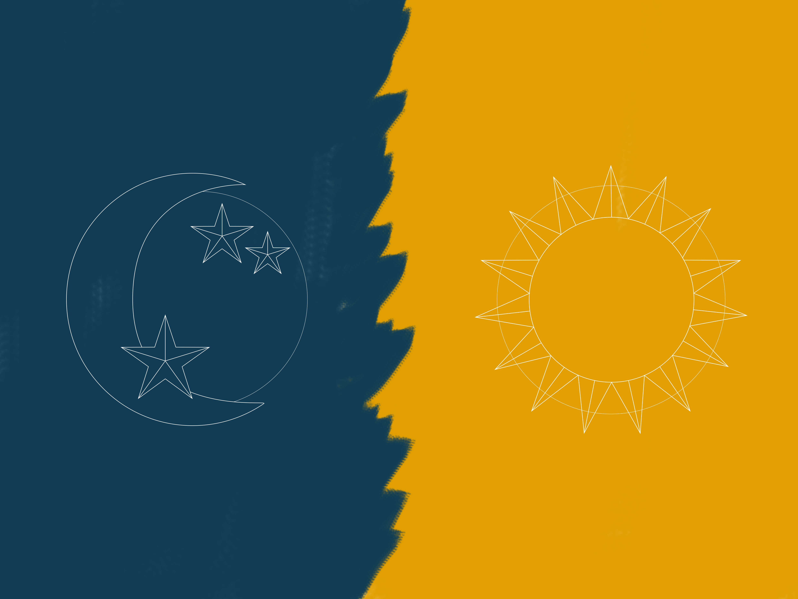

Mijn doel is om beter te leren illustreren en dit te combineren met design. Tijdens de minor heb ik bij verschillende opdrachten geoefend met verschillende illustratiestijlen. Daarnaast heb ik voor mijn portfolio ook geillustreerd.

Schoenen & Achtergrond
De eerste opdracht waarbij ik heb geillustreerd was de opdracht voor Interface & Beweging. In plaats van een plaatje in Illustrator maken, heb ik ervoor gekozen om met photoshop met veel verschillende soorten brushes aan de slag te gaan.
Qua stijl wilde ik een beetje een schilderachtige stijl. Ik heb de schoenen, de achtergrond en de iconen getekend met mijn tekentablet.
Logo Puur Natuur
Voor het vak Grid & Kleur heb ik een logo geillustreerd (dit logo staat klein linksboven en is in photoshop geillustreerd, vandaar dat ie niet helemaal scherp is).
De site gaat over de pure natuur, ik wilde een simpel logo hierbij met dunne lijntjes. Daarnaast wilde ik het logo ook elegant en om de natuur terug te laten komen heb ik bloemetjes getekend.

Dag & Nacht iconen
Voor webanimatie heb ik iconen gemaakt, deze heb ik in dezelfde stijl als de grote ster van het kunstwerk ontworpen. De iconen hebben mooie dunne lijnen.